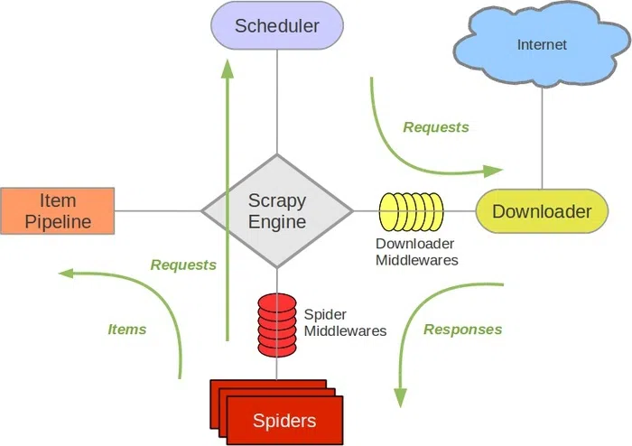

scrapy框架介绍
本文最后更新于：2021年6月23日 晚上
Scrapy介绍
Scrapy是一个基于Twisted的异步处理框架，是纯Python实现的爬虫框架，其架构清晰，模块之间的耦合程度低，可扩展性极强，可以灵活完成各种需求。只需要定制开发几个模块就可以轻松实现一个爬虫。
Scrapy框架主要实现下面的流程：
graph RL
A[内容提取]--url--->B[url队列]
B--url--->C[发送请求]
C--respone--->A
D[提取URL]--->A
E[提取数据]--->A
A--数据--->F[数据队列]
F--->G[保存数据]
来看下Scrapy框架的架构，如图所示：

它可以分为如下的几个部分。
Engine（引擎）：用来处理整个系统的数据流处理、触发事务，是整个框架的核心。Item（项目）：定义了爬取结果的数据结构，爬取的数据会被赋值成该对象。Scheduler（调度器）：用来接受引擎发过来的请求并加入队列中，并在引擎再次请求的时候提供给引擎。Downloader（下载器）：用于下载网页内容，并将网页内容返回给蜘蛛。Spiders（蜘蛛）：其内定义了爬取的逻辑和网页的解析规则，它主要负责解析响应并生成提取结果和新的请求。ItemPipeline（项目管道）：负责处理由蜘蛛从网页中抽取的项目，它的主要任务是清洗、验证和存储数据。Downloader Middlewares（下载器中间件）：位于引擎和下载器之间的钩子框架，主要是处理引擎与下载器之间的请求及响应。Spider Middlewares（蜘蛛中间件）：位于引擎和蜘蛛之间的钩子框架，主要工作是处理蜘蛛输入的响应和输出的结果及新的请求。
数据流
了解了架构，就是要了解它是怎么进行数据爬取和处理的，所以接下来介绍Scrapy的数据流机制。
Scrapy中的数据流由引擎控制，其过程如下：
Engine首先打开一个网站，找到处理该网站的Spider并向该Spider请求第一个要爬虫的URL。Engine从Spider中获取到第一个要爬取的URL并通过Scheduler以Request的形式调度。Engine向Scheduler请求下一个要爬取的URL。Scheduler返回下一个要爬取的URL给Engine，Engine将URL通过Downloader Middlewares转发给Downloader下载。- 一旦页面下载完毕，
Downloader生成一个该页面的Response，并将其通过Downloader Middlewares发送给Engine。 Engine从下载器中接收到Response并通过Spider Middlewares发送给Spider处理。Spider处理Response并返回爬取到的Item及新的Request给Engine。Engine将Spider返回的Item给ItemPipeline，将新的Request给Scheduler。- 重复第二步到最后一步，直到
Scheduler中没有更多的Request，Engine关闭该网站，爬取结束。
通过多个组件的相互协作、不同组件完成工作的不同、组件对异步处理的支持，Scrapy最大限度地利用了网络带宽，大大提高了 数据爬取和处理的效率。
安装
使用官方文档推荐的方式安装就可以了：
1 | |
项目结构
安装完成后，就可以使用Scrapy预先配置好的很多可用的组件和编写爬虫时所用的脚手架。
创建项目的命令如下：
1 | |
执行完成之后，在当前运行目录下便会出现一个文件夹，叫作demo，这就是一个Scrapy项目框架，可以基于这个项目框架来编写爬虫。
项目文件结构如下所示：
1 | |
在此要将各个文件的功能描述如下：
scrapy.cfg：它是Scrapy项目的配置文件，其内定义了项目的配置文件路径、部署相关信息等内容。items.py：它定义Item数据结构，所有的Item的定义都可以放这里。pipelines.py：它定义ItemPipeline的实现，所有的ItemPipeline的实现都可以放这里。settings.py：它定义项目的全局配置。middlewares.py：它定义Spider Middlewares和Downloader Middlewares的实现。spiders：其内包含一个个Spider的实现，每个Spider都有一个文件。
本博客所有文章除特别声明外，均采用 CC BY-SA 4.0 协议 ，转载请注明出处！